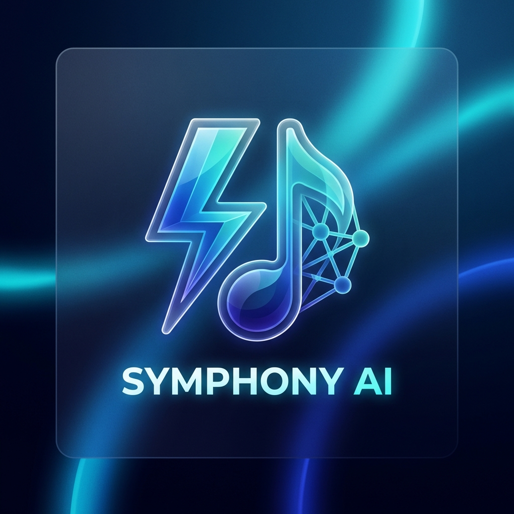
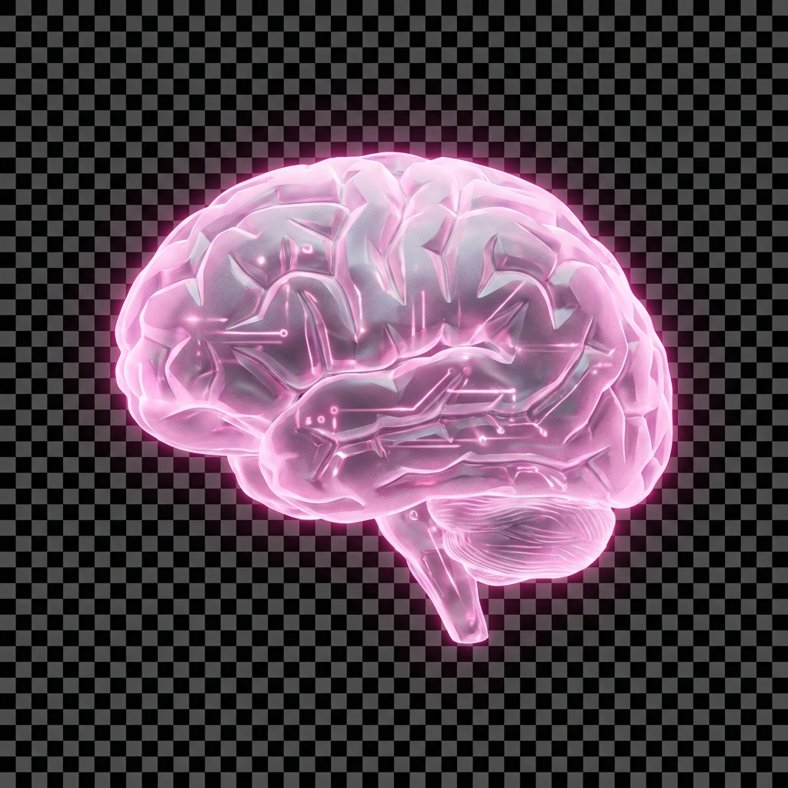
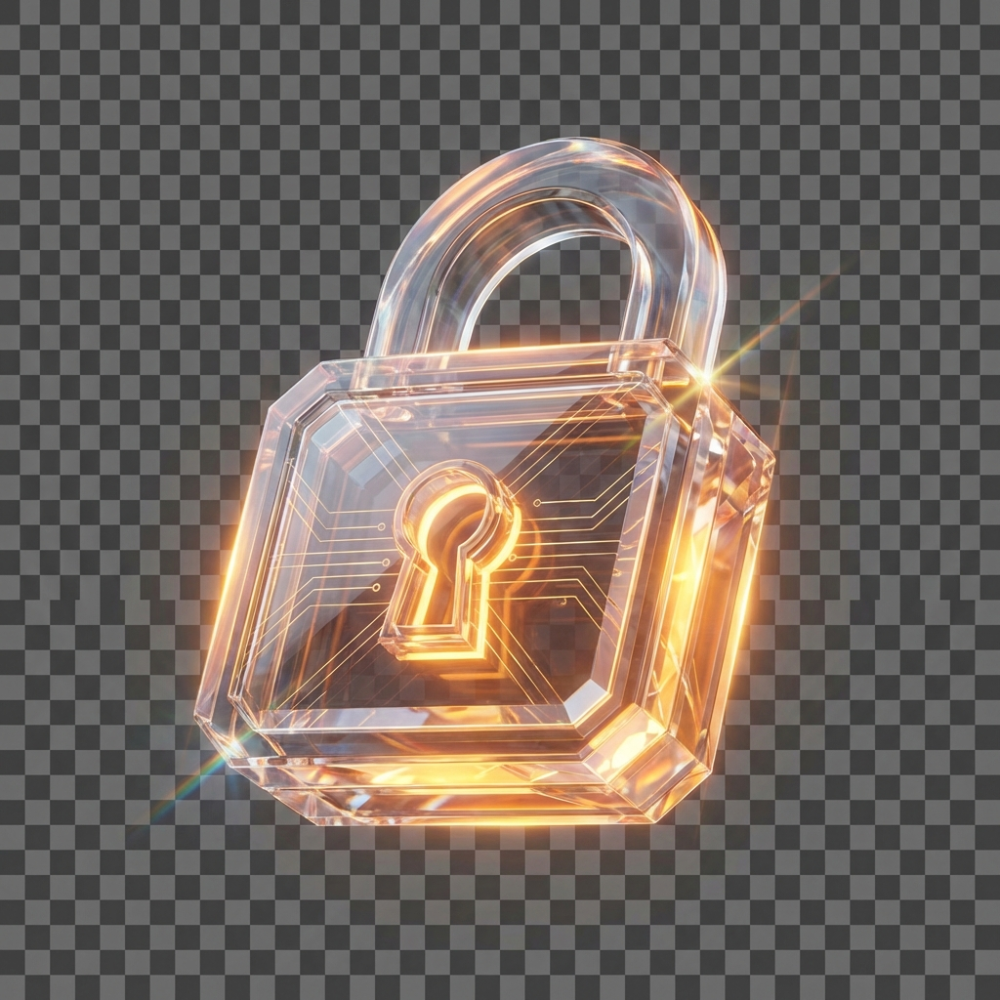
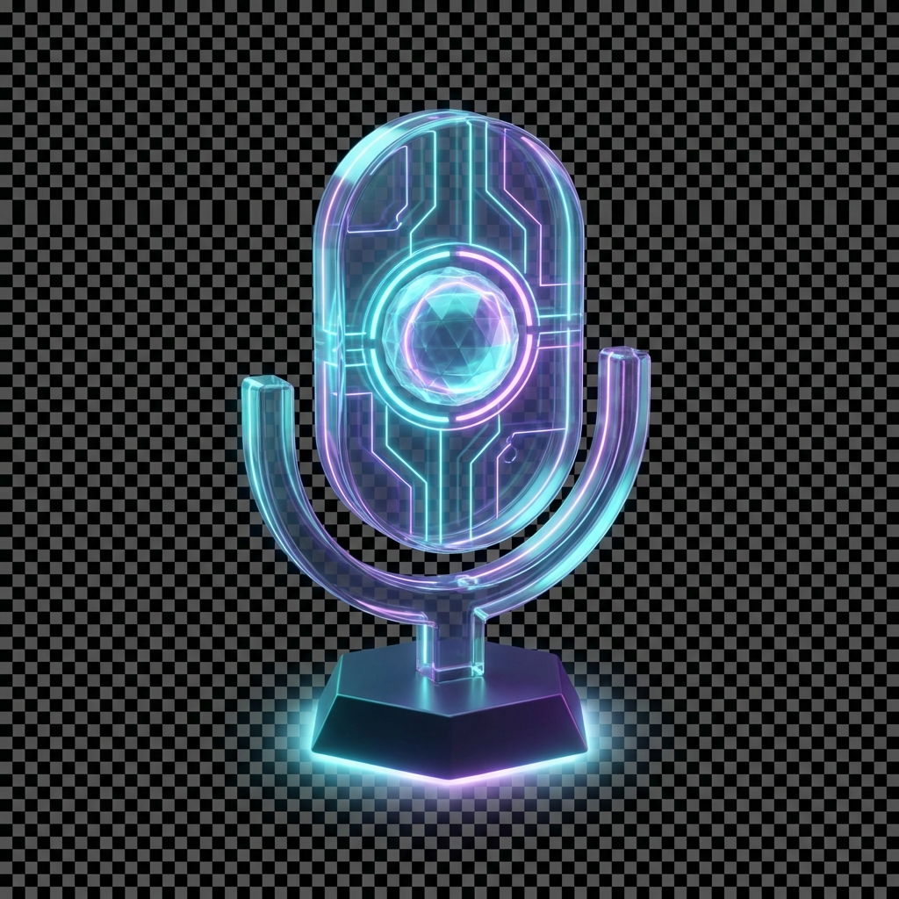

⚡
INITIALIZING_SYMPHONY_KERNEL

SYMPHONY
V7.0
🔍
💬
🔔
0
Neural_Kernel_Active
Command the
Future.
Quantum-orchestrated device autonomy and predictive intelligence.
Initialize_Hub
System_HUD

Cognitive_Load
84.2% OPTIMAL

Security_Level
ULTRA_SECURE
AUTH
Target_Nodes / Fast_Recall
Kernel_Vault / All_Modules
🏠
Home
🔍
Search

💬
Chat
👤
Auth
🔋
100%
🛰️
LTE